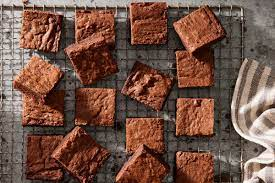

Broweednie recipe

How To Make Brownie with Cannabis
When edibles taste as good as brownies do, they can cause a munchies loop of getting hungry, then eating more brownies. Think ahead and make a second batch of regular brownies to avoid the temptation of eating one too many.
You can follow this recipe, using the same quantity of standard unsalted butter instead of cannabutter. The combination of rich chocolate and crunchy nuts masks the flavor of weed, so be sure to label them carefully. No one likes to play edible roulette.
Broweednie Ingredients:
Cannabutter
- 1/2 cup (113 grams) unsalted butter
- 1 gram quality cannabis flower
Weed Brownie
- 1/4 cup (21 grams) natural cocoa powder, plus more for the pan
- Cannabutter (above)
- 1/2 cup (100 grams) chopped dark chocolate
- 1 1/4 cups (250 grams) granulated suga
- 1 tablespoon molasses
- 1 teaspoon vanilla extract
- 1/4 teaspoon kosher salt
- 2 large eggs
- 3/4 cup (90 grams) all-purpose flour
- 1/2 cup (57 grams) chopped toasted nuts (optional)
How to Make Broweednie Step-By-Step
- Make the cannabutter, following the quantities listed above and my step-by-step guide linked in the Author Notes.
- Butter an 8x8-inch pan, then dust with cocoa. Heat the oven to 350°F (177°C).
- In a bain marie (or in the microwave in 10-second intervals), melt the cannabutter and dark chocolate. Remove the bowl from the heat, then add the sugar, molasses, vanilla, and salt.
- Add one egg at a time, mixing well after each. Beat for about 5 minutes, until a 5-second ribbon forms on the top of the batter when you lift the whisk. Stir in the chopped nuts (if you’re using them). Sift or whisk the flour with the cocoa powder, then add to the chocolate mixture. Combine just until the flour disappears (don’t overmix).
- Pour the batter into the pan and place in the center of the oven. Bake for about 25 minutes, until a glossy top forms and starts to crack. Keep an eye on the edges, they will firm up first. To check, insert a toothpick near the corner—it should have a few moist crumbs.
- Let cool on a wire rack for at least 10 minutes before cutting into 16 brownies. (If you’d like—and if your pan isn’t glass—you can plunge the pan into cold water immediately out of the oven. The temperature shock achieves a chewy crust while maintaining the gooey center, a tip I learned from Eric Kim.)
- Store the brownies in an airtight container for up to a week. For longer storage, cut and freeze the brownies, then warm up in the microwave or oven before serving.